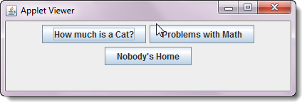
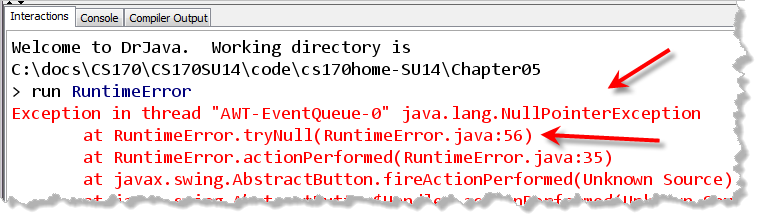
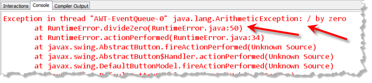
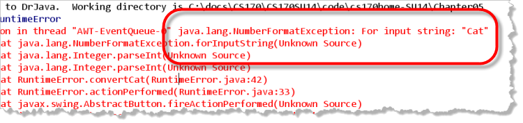
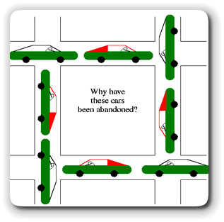

Runtime errors are the errors that occur when you try to run your program, instead of the errors you see when you compile your code. Runtime errors really come in three varieties:
 For some errors, the Java Virtual Machine will step in and
announces to the world that you've done something
wrong. Like syntax errors, such "program crashes" are
often annoying, but ultimately for the best.
For some errors, the Java Virtual Machine will step in and
announces to the world that you've done something
wrong. Like syntax errors, such "program crashes" are
often annoying, but ultimately for the best.
- For other errors, the JVM is unable to print an error message; your program just quits working altogether. With such "hanging programs", it's obvious that something is wrong, but, other than the symptoms, you receive no other help in solving the problem.
- The last group of errors—the really difficult errors—occur silently and without warning. These logical errors are those that cause your program to behave incorrectly, but, unless you're on the lookout, you might not even notice that anything is wrong.
Let's start by investigating the first of these, those errors that "announce themselves".
Errors that Announce Themselves
An error that prints an error message when your program is running is called a runtime exception. Runtime exceptions are nice for two reasons.
- First, when the Java Virtual Machine (JVM) notices that something is
wrong as your program is running, it makes an effort to notify you.
It does this by creating and throwing a special kind of object
(called a
Throwableobject) that contains information about what went wrong. Here's a picture of some of those classes:

- Second, Java's exception-handling mechanism allows you to intercept and correct many runtime exceptions. You'll learn more about the exception mechanism and how to put it to work in the next lesson in this unit.
You'll learn how to trigger your own exceptions later in this course.
You'll also learn how to use Java's try-catch
statements to intercept those objects. For right now, though, let's start
by taking a look at what a runtime exception looks like when it is thrown.
The RuntimeError Applet
In your Chapter05 folder you'll find an applet named
RuntimeError that we'll use to
study some of the most common types of runtime errors.
The applet allows the user to trigger three
types of runtime errors by pressing an appropriate button.
Here's what the applet looks like when it runs in DrJava:

NullPointerException
Once the program is running, go ahead an press the
"Nobody's Home" button. In both the DrJava Interactions pane,
and in the DrJava Console window, you'll see something that looks like
this:

As you can see from the JVM's error message, the error is aNullPointerException and the problem occurs in
RuntimeError's tryNull()
method, at line 56. The tryNull() method was
called from the actionPerformed() method, at
line 35.
If you look up the code for the tryNull() method,
you'll find this:
// RuntimeError.tryNull()
void tryNull()
{
b.setLabel("Uh Oh!");
}
Now, when you first look at this code, the problem is not immediately obvious.
We could trace back through the code to the
actionPerformed() method that called
tryNull(), but that still won't lead us
to the problem.
What It Means
Instead, to find the error, you have to understand what
NullPointerException means.
A NullPointerException is Java's way of saying:
"This object variable doesn't refer to a real object".
You can't send a setLabel()
message to a Button object that doesn't exist, and
so the JVM simply steps in and prints an error message.
Remember, a NullPointerException really means "uninitialized object"
Looking back through the code to where
the JButton variable b is defined you'll
find:
JButton b; // This has the value null
Initialize the JButton using any constructor, and
the problem will go away.
ArithmeticException
When you press the "Problems with Math" button, your Java
Console window will look something like this:

Java's VM throws anArtithmeticException whenever
you ask it to perform an illegal arithmetic operation. As you
can see from the message, the error occurred in the
divideZero() method. If you pull up the method,
which is shown here, you can see that, sure enough, the
program attempts the impossible:
// RuntimeError.divideZero()
void divideZero()
{
int numerator = 3;
int denominator = 0;
int problem = numerator / denominator;
}
Unlike NullPointerException, the
ArtithmeticException is usually not a puzzle when it
occurs. The solution, too, is usually straightforward:
"don't do that". With careful programming you should be
able to eliminate this exception.
Note : You might wonder why the divideZero() method could not simply say : int problem = 3 / 0; The reason is because Java's compiler is smart enough to recognize that this as an error and won't compile the code.
NumberFormatException
The third runtime error exposed by the RuntimeError applet
is a little different than the other two. Java generates a
NullPointerException in an attempt to protect the
integrity of the JVM, and it throws an
ArtithmeticException to protect the integrity of
the mathematical universe as we know it.
The last runtime error generated by this applet falls into
neither of these categories. If you press the "How Much is a Cat"
button, Java generates a message that says, essentially,
"I don't know how to do that:"

Following the line numbers, you can see that the error occurs in theInteger.parseInt() method—a method in the
standard Java class library. Both of the previous runtime errors
were intrinsic runtime errors—errors generated directly
by the JVM. This is not.
What it Means
If you trace back from where the original error occurred, you
find that the method convertCat() was the last time
that RuntimeError.java had hold of the code. Let's take
a look:
// RuntimeError.convertCat()
void convertCat()
{
String num = "Cat";
int bad = Integer.parseInt( num );
}
As you can see, the error is caused by asking the
Integer class to convert the String
Cat into an int. This is not an
impossible task—at least not impossible in the same sense that
dividing by zero is impossible.
It is also harder to protect against. As you found out in
previous assignments, when you get input from your users, they
can type, essentially, anything in response to your request for
input. If you use the String input functions, like
nextLine() to read numeric input, then
when you convert the text retrieved from the user
into a number, it is almost impossible to first check the contents
of the String to be sure that the conversion will
succeed.
For that reason, Java provides a way to recover from this sort of
runtime error—the try-catch mechanism.
You'll learn how to apply try-catch
later in the course.
InputMismatchException
Another runtime exception that is closely related to
NumberFormatException is the InputMismatchException
thrown by Scanner methods such as nextInt(), when
the input is formatted incorrectly.
Other Runtime Errors
Not all programs are as obliging as the runtime exceptions. Some programs simply stop responding to user input. These programs are called "hanging programs". It's obvious, when you run such a program, that something is wrong.
Discovering what the problem is, and fixing it, however, is sometimes a little more difficult. Knowing about the most common reasons for hanging programs helps.
Hanging programs usually stop responding for one of two reasons:
- You've written an "endless" or "dead" loop.
- You have a "system" error.
Endless loops are the most common reason for your program to hang. When we cover writing loops in a later chapter, you'll learn several ways to avoid this common error.
"System" Errors
In addition to hanging because of an endless loop, your program might also hang because of a "system error." This catch-all phrase covers a lot of ground. Most of the time, the system error really doesn't have anything to do with your program at all, and there's nothing you can do about it. Sometimes, though, you can change something in your program that will prevent the system error from occurring.
Most system errors, at least those where the system hangs, occur for one of two reasons:
- A necessary computer resource is depleted.
- Multiple programs have "deadlocked" waiting for access to the same resource.
An example of a system resource is the Graphics
class. If you confine your use of the Graphics
class to the Graphics object you receive in the
paint() method, you won't have any problems.
If, however, you use the getGraphics() method
to draw outside of the paint() method, like this:
public void drawHead()
{
Graphics pen = this.getGraphics();
pen.fillOval(0, 0, getWidth(), getHeight());
}
and, you forget to call the dispose() method after
you are finished, you may exhaust your operating system's
supply of "graphic device contexts". When this happens, your
Java program becomes unable to repaint itself. It doesn't hang,
exactly, but for all intents and purposes, it's dead.

Other resources that are often similarly limited and that can result in similar resource depletion includeColor
objects, threads, streams, and network connections.
Deadlock
Deadlock occurs when two processes, or threads, both attempt to acquire a resource used by the other. If you have an input and output file, for instance, one program may open the input file first, while the other opens the output file first. Both programs can get stuck and wait forever for the other program to give up the resource which it needs.
Deadlock is common when it comes to writing multi-threaded programs, something that we haven't done in this class.
Logical Errors
Logical errors are different than the other errors we've discussed up to this point. It's not just that logical errors are harder to correct—but they are—it's that it is incredibly difficult to discover that an error has occurred at all. In fact, an entire phase of the software development cycle—the testing phase—is devoted to discovering such hidden, unrevealed errors.

Runtime Errors Summary
- A runtime exception is thrown by the Java Virtual Machine when it notices an error in your code as your program runs. These kinds of errors cannot be caught by the Java compiler.
- When the JVM notices that something is wrong as your program is running,
it makes an effort to notify you by creating and throwing a
Throwableobject that contains information about what went wrong. - A
NullPointerExceptionmeans that you are trying to use an object variable that has not been initialized. This most often happens with instance variables, since the Java compiler prevents you from using uninitialized local variables. - An
ArithmeticExceptionoccurs most often from trying to divide by zero. You may encounter this when you unintentionally use integer division when you meant to use real-number division, and so, inadvertently end up with a zero divisor. (Dividing by 0.0 doesn't throw a runtime exception, but results in the specialNaN(Not a Number)doublevalue instead. - A
NumberFormatExceptionoccurs when you try to convertStringdata to numeric values, using theInteger.parseInt()orDouble.parseDouble()functions on aStringthat is improperly formatted ( containing spaces, commas, or other illegal characters.) - The
InputMismatchExceptionis thrown when you try to read an integer or real number using theScannerclass, and the input doesn't match the expected pattern. This is almost exactly like theNumberFormatExceptionthrown when parsing an existingString. - Hanging programs are those that continue running, but do not respond to user input. Hanging programs do not display an error message from the JVM. The most common programming error that causes hanging programs, is writing an endless loop.
- System errors are less-common causes of hanging programs. Programming errors that can trigger system errors include those that deplete a necessary resource, and those that create a deadlock situation. Such situations generally occur in more sophisticated programs that manipulate different threads or external resources such as network connections.
- Logical errors are a category of runtime error where the program's output is not correct or not as expected. To discover logical errors requires testing and to fix them requires debugging.